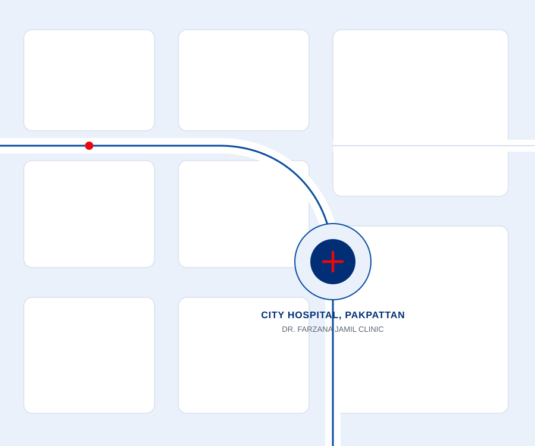

What this section demonstrates
New Patient Consultation
A clear introduction to the kind of information a verified clinic may share before a first visit.
Representative medical website concept
A refined demonstration of how a modern medical website can introduce your care, build patient confidence, and make the next step easier.
Demonstration interactions only — they do not contact a clinic, create a booking, or send information.

Care, clearly explained
These examples show how a live site can introduce general appointment types without offering medical advice, diagnosis, or treatment guidance.
What this section demonstrates
A clear introduction to the kind of information a verified clinic may share before a first visit.
What this section demonstrates
A simple way to present a broad discussion topic while keeping clinical decisions with the verified practice.
What this section demonstrates
An example of how a clinic can describe continuity and next steps in measured, general language.
What this section demonstrates
A concise example of administrative copy a real clinic could tailor after confirming its own services.

Representative practitioner profile
This representative profile shows how a verified clinician introduction can sit beside clear website information. Before launch, a real clinic would confirm every biographical detail.
It intentionally avoids unverified personal details and keeps the focus on a reassuring, easy-to-navigate patient experience.
A calmer clinic experience


A final website can introduce its verified setting, practical arrival information, and the tone of the clinic without making assumptions about services or outcomes.
Your visit
Read broad, verified service information and the practical details a real practice chooses to publish.
A live site would direct visitors to the clinic’s confirmed contact channel or booking provider.
The verified practice would provide its own administrative guidance before a visit is arranged.
Patient confidence
This demonstration does not publish ratings, reviews, or unverified claims. A live site can connect the following information after it has been confirmed.
A real clinic can link visitors to independently hosted feedback without reproducing it here.
Confirmed profile details can be presented clearly once the clinic has supplied them.
Opening and contact availability can be shown only after the practice verifies them.
Verified travel information can be added when the clinic has approved its location details.
Location demonstration
No address, map, or visiting times are displayed in this demonstration. A live version can add confirmed directions and a click-to-load map after the clinic approves them.

Administrative FAQ
No. NexaCare Medical is a representative website concept and does not provide medical services.
No. The clinic controls are demonstration interactions only; they do not create a booking or send information.
Those details must be supplied and approved by a real clinic before they can be published.
No. A live clinic would publish its own approved guidance. This demonstration must not be used for medical advice or urgent care.
Built by Bukhari AI Solutions
NexaCare Medical demonstrates how clear structure, visible safeguards, and refined presentation can support your practice’s own confirmed information.
Message Bukhari AI Solutions on WhatsApp: 03214854145